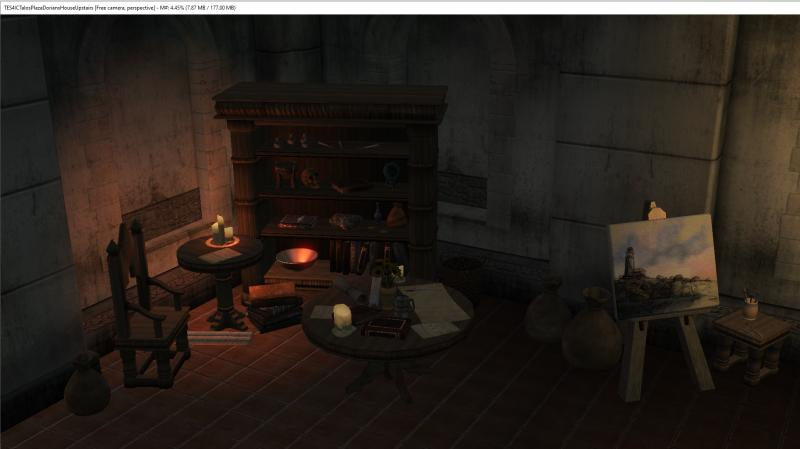

About Me
My name is Kyle Barnett. I am 21 years old and a junior at UNF. This class will help me learn to write code for websites. I was born in North Carolina and have lived in Ponte Vedra Beach, Florida since I was in 5th grade. I live with my parents and my younger brother.
I achieved my Eagle Scout in 2020 after participating in Boy Scouts since I was in first grade. I particularly enjoyed the leadership skills I learned, the public speaking experience, and the advancement of life skills. I attended many campouts in several states. I have had the opportunity to do a great deal of traveling including trips to Europe and Africa.
Hobbies & Interests
I like to participate in the game Dungeons and Dragons and also play and design video games. I had an internship with Skyblivion where I was part of the team remaking the Elder Scrolls IV Oblivion. I worked as an interior designer where I created the level design of various interior locations such as houses and caves. I work as a personal assistant helping my client design spreadsheets and data entry. Some of my work requires autonomy in achieving status hearings.
This is an example of a section of interior that I made for Dorian's House.
I enjoy spending time with family at home and traveling with them. I enjoy new life experiences. I like to swim and snorkel. I enjoy playing large games with an emphasis on storytelling and decision making. I am a member of the Cybersecurity, Technology, and TTRPG clubs on campus at UNF.
Education
- University of North Florida, Jacksonville, FL (August 2023 – Present)
- Junior currently working toward bachelors degree in Information Science with a minor in leadership. - Qualified for Computer Honors program.
- Florida State College at Jacksonville, Jacksonville, FL (January 2023 – August 2023)
- Completed AA Degree
- Florida Polytechnic University, Lakeland, FL (August 2022 – December 2022)
- Florida State College at Jacksonville, Jacksonville, FL (August 2020 -July 2022)
Skills
| Technical Support (Win/Mac) | Laptop Migration | Game Development/Level Design |
|---|---|---|
| Computer Maintenance | Software Tutorials | Computer Building |
| Leadership Skills – Eagle Scout | Testing Experimental Workflows | Patch Management |
Experience
- Handy Helper Personal Business (2019 - present)
- Tech Enthusiast
- Created business to help local residents with various computer needs
- Performed computer migrations
- Assisted clients in data entry projects
- Conducted multiple software upgrades
- Tech Enthusiast
- Florida Polytechnic University S.I.M Lab (Simulation Instruction and Multimedia Lab) (August 2022 –
December 2022)
- S.I.M. Lab Student Worker
- Managed Motion Capture Capabilities
- Created video game for Fall 2022 Game Expo
- Responsible for managing IT inventory
- S.I.M. Lab Student Worker
- Wired Works (Network and Audio Visual) (April 2021 – September 2021) Summer work prior to starting college.
- Wired Works, installs networks, TV, mounting TV, security cameras, virtual assistance, speakers and
wiring.
- Assistant Audio-Visual Installer
- Installed multiple internet networks for businesses and homes
- Created smart homes by programming automation devices such as Alexa and Sonos to interact multiple devices in a location.
- Assistant Audio-Visual Installer
Projects
- Skyblivion (Game Development) Global Project (March 2021 – August 2022)
- Interior Level Designer
- Working with a Global development team
- Completed 11 elaborate interiors
- Testing experimental workloads to move the Skyblivion project to the cloud
- Mentor new member of the project to help ensure their early success
- Attend team meetings to scope the next steps in the project
- Interior Level Designer
Extracurricular Activities
- Eagle Scout – Charlotte, NC and Ponte Vedra Beach FL (August 2009 – March 2021)
-
- Several Positions of Responsibility within the Troop: Den Chief, Historian, Web Master, Sr Patrol Leader (SPL), Asst SPL, Order of the Arrow Representative, and Junior Assistant Scout Master
- Attended National Youth Leadership Training (NYLT) and became an instructor
- Utilize the EDGE methodology (Educate, Demonstrate, Guide, and Enable)
- Developed Social skills, resolving conflict, motivating others, and leadership skills
-